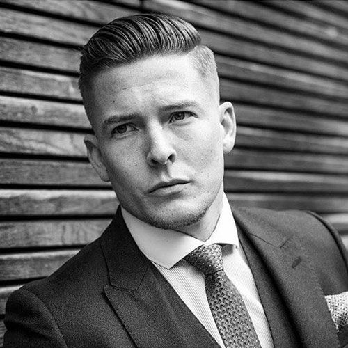
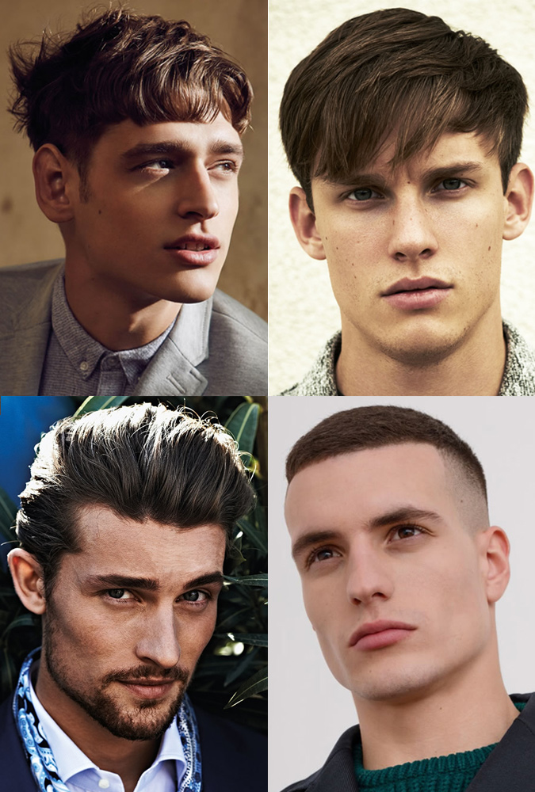
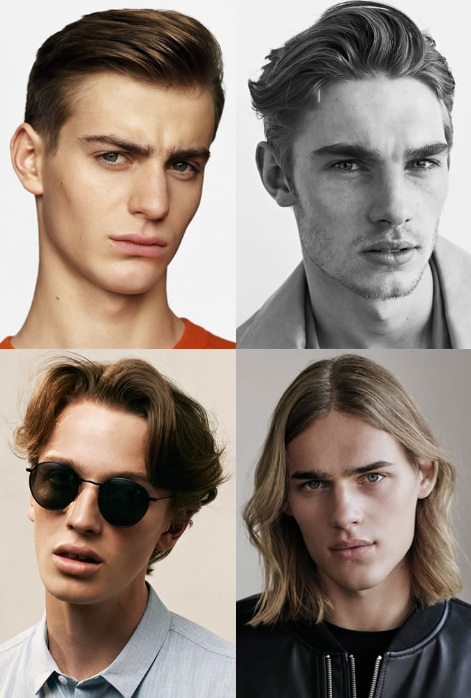
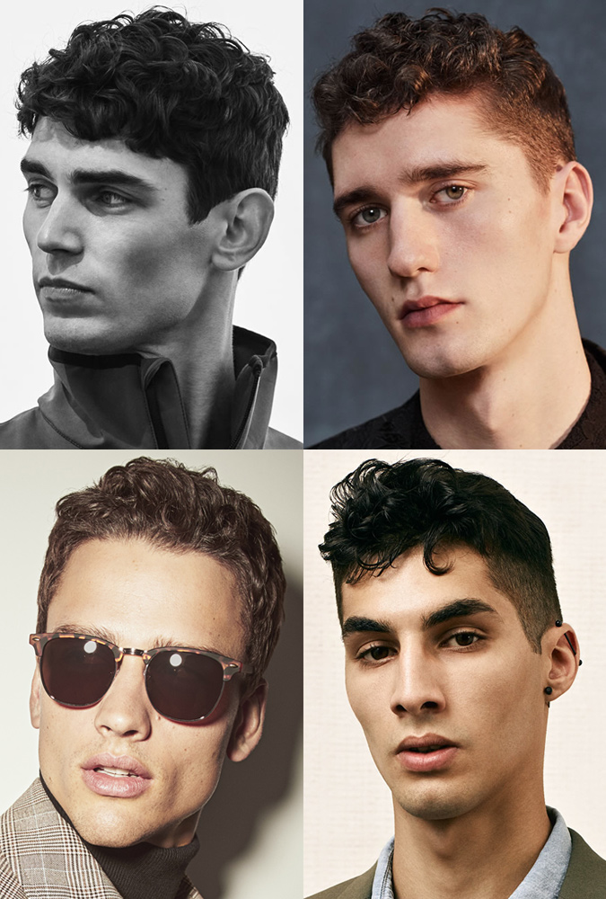

Hairstyle
There are a number of things that affect whether hairstyle suit you or not. One of them is shape of your face. How you style your hairstyle is other of them. If you are considering a samurai cop, then the fact that you are a samurai warrior should be third.But the most important are the hair itself.
thick hair
Thick hair is a two-sided weapon and a poisoned cup of all types of hair. The overwhelming view is that thick hair is something that has to be envied, as any redundancy or unwanted baldness is absolutely absent. What many people do not realize, however, is the fact that thick hair requires extreme effort not to look like you have just won the dog's show.
Thick hair comes in many forms, it can be curly and delicate, coarse, or wavy and coarse, hard on any treatment. Their characteristic feature is their fullness, which means they can often seem uncontrollable and need to cut regularly to maintain the ideal shape
Best hairstyle for thick hair
The key to managing thick hair is to maintain it - so how do you care about it? If you have hair full of hair, you need it often and regularly adjust / cut / shorten etc. The good news is, however, that you have many choices for choosing a hairstyle to suit you.
Short and sharp cuts work really great, but longer cuts are also suitable for thick hair. Their weight, when they grow, will help you keep them in place. Hidden inner layers are a good option to add shape to longer hairstyles.
fine hair
Getting the best of fine hair is quite challenging, because sometimes it seems that there is not much to do with it. In contrast to the obviously growing baldness in reddish hair, you are not so sympathetic and understanding. You still have plenty of hair, just more tired and lifeless than other types of hair.
Jemným vlasom chýba objem a hustota, pôsobia zvädnuté a chabo a dosť často cez ne vidíte pokožku.
Best hairstyle for fine hair
Men with fine hair should let them a little longer to add a little weight to the hair, because shorter hairstyles will necessarily emphasize lack of fullness and texture. Although it does not sound intuitive, longer hair length between the ears and shoulders, they add more hair styles and, for example, do not act as lifeless as they are on the side.
wavy hair
Wavy hair are problematic in the sense that they can not decide whether they are curly or equal so they live people with this type of hair confused, what to do with them at all. Add to that the fact that each wavelet is different and you have the potential for everyday adventure ahead of the mirror.
Wavy hair is the middle between curly hair and straight hair, but they can have tremendous differences in the length and texture of each wool. Because each of the hair is substantially different from that of straight hair, cutting and staying requires much more attention.
Best hairstyle for wavy hair
Let your wavy hair live with your own life and you risk that you will look like a part of supernumeraries from the Game of Thrones. Wavy hair needs a goal and direction. The best way to roll curly hair is short cut on the hips and back and longer on the top to give the hair a little movement and shape.
